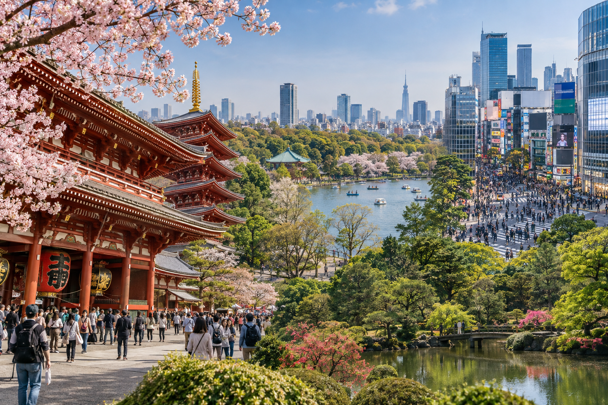
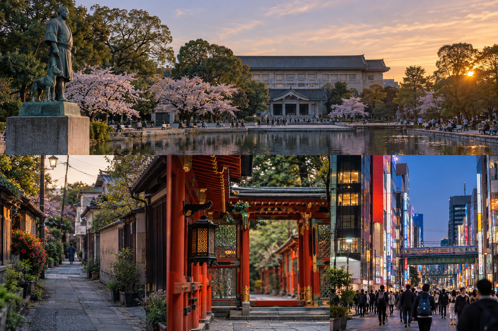
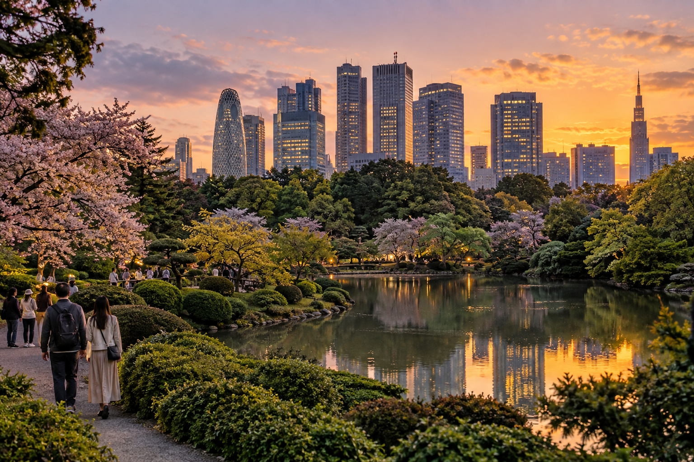

Tokyo 5-Day Itinerary for First-Time Visitors
Five days in Tokyo gives you enough time to see the city's major first-time highlights without treating every day like a race. Instead of moving between several famous districts from morning until night, you can explore neighborhoods properly, stop for food, spend time shopping, and still leave room for weather, jet lag, and unexpected discoveries.
This itinerary is intentionally different from our three-day Tokyo route. The shorter itinerary groups more major neighborhoods together because time is limited. With five full days, I would split Tokyo into smaller geographical areas and slow the pace. That gives places such as Asakusa, Ueno, Shibuya, and Shinjuku enough time to feel like neighborhoods rather than quick photo stops.
This is also a Tokyo-only five-day itinerary. I am not using Day 5 for Hakone, Kamakura, Nikko, or another destination outside the city. Tokyo has more than enough for five full first-time sightseeing days. Travelers who specifically want to leave the city can replace one day later using our separate day-trip guide.
Tokyo 5-Day Itinerary at a Glance

| Day | Main Areas | Main Experience |
|---|---|---|
| Day 1 | Asakusa → Kappabashi → Sumida / Tokyo Skytree | Traditional Tokyo and eastern city views |
| Day 2 | Ueno → Yanaka → Nezu → Akihabara | Museums, old neighborhoods and pop culture |
| Day 3 | Meiji Jingu → Harajuku → Omotesando → Shibuya | Modern western Tokyo |
| Day 4 | Shinjuku Gyoen → Shinjuku → Evening Shinjuku | Gardens, skyscrapers and nightlife |
| Day 5 | Tsukiji → Ginza → Tokyo Station → Marunouchi → Yurakucho | Food, shopping and central Tokyo |
This structure gives each part of Tokyo more breathing room.
How This Differs from the 3-Day Tokyo Itinerary?
The goal is not:
Complete the 3-day itinerary and add two extra days.
That would create unnecessary repetition.
Instead:
3-Day Tokyo Trip
Focus on:
- ✓Essential highlights
- ✓Larger neighborhood groups
- ✓Faster sightseeing
- ✓Fewer optional stops
5-Day Tokyo Trip
Focus on:
- ✓Smaller neighborhood clusters
- ✓More walking and exploration
- ✓Museums or gardens
- ✓Slower meals
- ✓More flexible evenings
- ✓Areas beyond the biggest headline attractions
For example, our three-day itinerary combines Ueno with Asakusa and Akihabara.
In this five-day version, Ueno gets a separate day with Yanaka and Nezu.
Shinjuku also gets its own day instead of being added to the end of Shibuya.
That is what makes this a genuinely different itinerary.
Who This 5-Day Tokyo Itinerary Is For?
This route works especially well if:
- ✓Tokyo is a major part of your Japan trip
- ✓This is your first Tokyo visit
- ✓You have five complete sightseeing days
- ✓You want both traditional and modern Tokyo
- ✓You enjoy walking through neighborhoods
- ✓You do not want every day packed from morning until midnight
It also works well before continuing to places such as:
- ✓Kyoto
- ✓Osaka
- ✓Hiroshima
If you are still deciding whether three or five days suits your overall Japan route, start with Tokyo Travel Guide for First-Time Visitors.
What Counts as Five Days in Tokyo?
These should ideally be five full sightseeing days.
For example:
Day 0: Arrive in Tokyo
Day 1: Full Tokyo day
Day 2: Full Tokyo day
Day 3: Full Tokyo day
Day 4: Full Tokyo day
Day 5: Full Tokyo day
Day 6: Continue to Kyoto or another destination
Do not count an afternoon international arrival as a complete Tokyo day.
Why Arrival Day Should Stay Light
Even if your plane lands at noon, you still have:
- ✓Immigration
- ✓Baggage collection
- ✓Customs
- ✓Airport transfer
- ✓Hotel check-in
- ✓Jet lag
Use the arrival evening for something near your hotel.
Good options include:
- ✓Dinner
- ✓A neighborhood walk
- ✓Convenience-store supplies
- ✓Setting up your IC card
- ✓Checking tomorrow's route
- ✓Sleeping early
Saving your energy can improve all five sightseeing days.
Where Should You Stay for Five Days?
For a five-night or longer Tokyo stay, hotel location matters even more because you will use the same base repeatedly.
I would prioritize:
- ✓Short walk to a useful station
- ✓Several practical rail connections
- ✓Restaurants nearby
- ✓Easy return route at night
- ✓Airport access that fits your flights
You do not need to stay beside every attraction.
The detailed decision belongs in Where to Stay in Tokyo: Best Areas for First-Time Visitors.
For this itinerary, a well-connected central base is more useful than constantly changing Tokyo hotels.
Should You Change Hotels Within Tokyo?
Usually no.
Tokyo is large, but the transport network makes switching hotels unnecessary for most five-day first visits.
Changing hotels means spending time on:
- ✓Packing
- ✓Checking out
- ✓Moving luggage
- ✓Finding another hotel
- ✓Checking in again
I would rather use one good base and spend those hours sightseeing.
Set Up Tokyo Transport Before Day 1
You do not need to memorize Tokyo's rail map.
Have:
- ✓Working mobile data
- ✓A route-planning app
- ✓A compatible IC card or other suitable fare method
- ✓Your hotel saved on your phone
- ✓Comfortable walking shoes
The detailed JR, Metro, Toei, transfer, pass, and station-exit information belongs in How to Get Around Tokyo: Subway, Trains and Transport.
For this itinerary, follow one route at a time.
Day 1: Asakusa, Kappabashi and Tokyo Skytree
Your first full day focuses on eastern Tokyo.
The route is:
Asakusa → Kappabashi → Sumida River area → Tokyo Skytree
This is deliberately different from the three-day itinerary.
Instead of rushing from Asakusa into Ueno and Akihabara, you will stay around eastern Tokyo and explore the area more completely.
Why Start With Asakusa?
Asakusa is a strong first morning because it introduces a side of Tokyo that feels very different from the modern commercial districts you will see later.
You get:
- ✓Senso-ji
- ✓Traditional shopping streets
- ✓Temple atmosphere
- ✓Local food
- ✓Older streets
- ✓Sumida River views
Starting here also gives you time to adjust to Tokyo without immediately entering one of its largest stations.
Morning: Reach Asakusa Early
Try to arrive before the main daytime crowds build.
You do not need to wake at 5 AM.
A normal earlier sightseeing start is enough.
Begin around Kaminarimon.
From there, continue along Nakamise toward Senso-ji.
Kaminarimon
Kaminarimon is the famous gate leading toward Senso-ji.
It is one of Tokyo's most recognizable traditional landmarks.
Take your photos, but do not spend too long around the entrance.
The more interesting part of Asakusa continues beyond it.
Walk Through Nakamise
Nakamise is the shopping street between Kaminarimon and the main temple area.
You will find:
- ✓Traditional snacks
- ✓Souvenirs
- ✓Sweets
- ✓Small gifts
- ✓Japanese-style goods
It becomes crowded.
If you want to buy something, do it because you genuinely like it rather than stopping at every stall shown on social media.
Visit Senso-ji
Allow enough time for the temple grounds.
Senso-ji is not simply a backdrop for photographs.
This remains an active religious site.
Walk around respectfully and follow posted guidance.
Depending on your interest, you may also see:
- ✓Main temple buildings
- ✓Pagoda views
- ✓Fortune slips
- ✓Incense area
- ✓Nearby shrine spaces
There is no need to perform rituals you do not understand.
Respectful observation is enough.
Spend Longer in Asakusa Than on the 3-Day Route
This is one of the advantages of having five days.
Instead of immediately leaving after Senso-ji, explore some of the surrounding streets.
Choose one or two additions.
Optional: Asakusa Shrine
Asakusa Shrine sits close to Senso-ji and can be added easily.
It gives you another religious and historical setting without requiring another train journey.
Because it is nearby, this is a better use of time than crossing Tokyo to add an unrelated attraction.
Optional: Asakusa Culture Tourist Information Center
The tourist information center near Kaminarimon can provide views over the surrounding neighborhood.
It is useful if you want to see:
- ✓Nakamise from above
- ✓Senso-ji direction
- ✓Urban Asakusa
- ✓Tokyo Skytree in the distance
It is a short addition rather than a major attraction.
Walk Away From the Main Tourist Street
One of the benefits of a longer itinerary is having enough time to leave the busiest path.
Walk through a few quieter Asakusa streets.
You may find:
- ✓Small restaurants
- ✓Traditional shops
- ✓Cafes
- ✓Local streets
- ✓Older buildings
You do not need a named attraction every 15 minutes.
Tokyo becomes more interesting when some of the day is simply walking.
How Long Should You Spend in Asakusa?
For this five-day itinerary, I would allow about:
3 to 4 hours
including temple time, neighborhood walking, and a snack or short break.
That is significantly longer than the compact version used in the three-day itinerary.
Late Morning or Early Afternoon: Kappabashi
Next, continue toward Kappabashi Dougu Street.
Kappabashi is associated with restaurant and kitchen supplies.
You may see shops selling:
- ✓Japanese knives
- ✓Ceramics
- ✓Bowls
- ✓Chopsticks
- ✓Kitchen equipment
- ✓Cooking tools
- ✓Restaurant signs
- ✓Plastic food models
This is one of those Tokyo areas that becomes much easier to include when you have five days.
Official Tokyo tourism guidance also pairs Kappabashi naturally with an Asakusa visit because it is around a short walk from the temple area.
Who Will Enjoy Kappabashi Most?
It is especially useful for:
- ✓Home cooks
- ✓Chefs
- ✓Food lovers
- ✓Travelers buying practical Japanese souvenirs
If none of those describe you, do not spend two hours here.
Walk through briefly or skip it.
Japanese Kitchen Knives
Kappabashi is well known for specialist knife stores.
If you buy a knife:
- ✓Ask about care
- ✓Check how it should be packed
- ✓Keep airline baggage rules in mind
- ✓Do not place it in your hand luggage for the flight home
Do not buy an expensive specialist knife simply because you think it is a required Tokyo souvenir.
Ceramics and Tableware
For many travelers, Japanese bowls, cups, plates, and chopsticks are easier souvenirs than large decorative items.
If you are continuing around Japan for another week or two, consider:
- ✓Weight
- ✓Fragility
- ✓Luggage space
You still need to carry your purchase for the rest of the trip.
Lunch: Asakusa or Around Kappabashi
Keep lunch within the area.
Possible options include:
- ✓Tempura
- ✓Soba
- ✓Sushi
- ✓Tendon
- ✓Ramen
- ✓Casual Japanese set meals
You have five days, so you can afford a more relaxed lunch than on a three-day itinerary.
But I still would not spend a large part of the afternoon crossing Tokyo for one viral restaurant.
Afternoon: Move Toward the Sumida River
After lunch, return toward the eastern waterfront.
Asakusa sits beside the Sumida River, and this gives the afternoon a more open feel after the narrow commercial streets.
Walk toward areas around:
- ✓Azumabashi
- ✓Sumida River
- ✓Views toward Tokyo Skytree
Official Tokyo tourism guidance highlights Asakusa's waterfront location and views toward Tokyo Skytree from the river area.
Take a Slower Riverside Break
By this point, you may already have several hours of walking behind you.
This is a good time to slow down.
You do not need every section of the itinerary to contain a ticketed attraction.
Use the river area for:
- ✓Photos
- ✓A short walk
- ✓Coffee
- ✓Sitting down
- ✓Skyline views
This slower pacing is one of the main advantages of the five-day itinerary.
Late Afternoon: Tokyo Skytree
Finish the main sightseeing portion around Tokyo Skytree if city views interest you.
At 634 meters, Tokyo Skytree is one of the dominant landmarks of eastern Tokyo.
You can reach the surrounding area from Asakusa using several transport options depending on your route.
Do You Need to Go Up Tokyo Skytree?
No.
There are two different decisions:
Visit the Skytree Area
You can see:
- ✓Tower exterior
- ✓Shopping
- ✓Restaurants
- ✓Surrounding commercial complex
Visit the Observation Deck
Do this if high city views are important to you.
You do not have to pay for every major observation deck in Tokyo.
Avoid Booking Too Many Observation Decks
During five days you may encounter several skyline-view options.
For example:
- ✓Tokyo Skytree
- ✓SHIBUYA SKY
- ✓Shinjuku viewpoints
- ✓Other towers and observation areas
You do not need all of them.
Choose one or two that fit your interests.
For this itinerary:
Tokyo Skytree = optional paid observation experience
The neighborhood still works without going up.
Tokyo Skytree or SHIBUYA SKY?
They provide different perspectives.
Tokyo Skytree fits naturally into this eastern Tokyo day.
SHIBUYA SKY fits naturally into Day 3.
Rather than deciding which is universally “best,” ask:
- ✓Which location fits my route?
- ✓Do I want daytime or night views?
- ✓Which ticket is available?
- ✓How many observation decks do I actually want?
If you plan to book only one, you can decide later.
Evening Around Skytree or Asakusa
For the evening, choose between two simple options.
Option 1: Stay Around Skytree
Good if you want:
- ✓Dinner
- ✓Shopping
- ✓Evening tower views
- ✓A simple end to the day
Option 2: Return to Asakusa
Good if you want:
- ✓A quieter evening walk
- ✓Temple-area atmosphere after daytime crowds fall
- ✓Dinner around Asakusa
There is no need to add Shinjuku, Shibuya, or Ginza tonight.
Those neighborhoods have their own days.
Day 1 Route Summary
Your route is:
Morning: Asakusa and Senso-ji
Late morning: Deeper Asakusa exploration
Early afternoon: Kappabashi and lunch
Afternoon: Sumida River
Late afternoon: Tokyo Skytree
Evening: Skytree or Asakusa
The goal is not the maximum number of attractions.
The goal is to experience eastern Tokyo properly.
Day 1 Suggested Pace
| Time Block | Area |
|---|---|
| Morning | Senso-ji and Asakusa |
| Late morning | Asakusa streets |
| Early afternoon | Kappabashi + lunch |
| Afternoon | Sumida River |
| Late afternoon | Tokyo Skytree |
| Evening | Asakusa or Skytree area |
These are flexible blocks, not exact appointment times.
If You Do Not Care About Tokyo Skytree
Skip it.
Use the extra time for:
- ✓Longer Asakusa exploration
- ✓Kappabashi shopping
- ✓Sumida River walk
- ✓An early dinner
- ✓Rest
You will have other opportunities for skyline views later.
If You Do Not Care About Kappabashi
Skip it and move toward the river earlier.
Do not visit a specialist kitchen district simply because it appears in the itinerary.
The five-day plan has enough room for personalization.
If Day 1 Is Rainy
Keep Senso-ji, but reduce long outdoor walking.
Spend more time in:
- ✓Shops
- ✓Cafes
- ✓Skytree commercial areas
- ✓Indoor shopping
If another day's forecast is significantly better, you can also move the observation experience.
If You Are Still Jet-Lagged
End Day 1 early.
You have four more days.
Do not turn the first day into a 14-hour sightseeing test.
Skipping one evening activity is better than beginning Day 2 exhausted.
Day 1 Planning Rule
The key rule is:
Stay in eastern Tokyo.
Do not add Ueno simply because it is nearby.
Ueno deserves more time in this five-day itinerary, so it becomes the starting point for Day 2.
That separation is what gives the five-day route more depth than the three-day version.
Day 2: Ueno, Yanaka, Nezu and Akihabara

Day 2 continues in eastern Tokyo, but the atmosphere is different from Asakusa.
The route is:
Ueno → Yanaka → Nezu → Akihabara
This day combines:
- ✓Parks
- ✓Museums
- ✓Older residential streets
- ✓Temples and shrines
- ✓Local shopping streets
- ✓Anime, gaming, and electronics
The contrast between quiet Yanaka and bright Akihabara makes this one of the most varied days in the five-day itinerary.
Morning: Start in Ueno
Begin around Ueno Park.
Ueno is useful because it gives you several choices rather than forcing every visitor into the same attraction.
The wider area includes:
- ✓Museums
- ✓Parkland
- ✓Cultural sites
- ✓Ameyoko
- ✓Restaurants
- ✓Easy connections to nearby neighborhoods
Your first decision is whether you want a museum-focused morning or more outdoor exploration.
Option 1: Choose One Major Museum
If Japanese history, art, science, or culture matters to you, use part of the morning for one museum.
Do not attempt several large museums in one morning.
A proper museum visit can easily take several hours.
For a five-day itinerary, that is fine.
The point of having more time is being able to stay somewhere interesting rather than rushing through it.
Tokyo National Museum
The Tokyo National Museum is one of the strongest choices for travelers interested in Japanese art, historical objects, and cultural collections.
If you choose it, give it meaningful time.
Do not schedule:
Museum → museum → museum
simply because several are close together.
One good museum experience is enough for most first-time visitors.
Option 2: Explore Ueno Park Without a Museum
If museums are not a priority, walk through the park instead.
Depending on season and interest, you can enjoy:
- ✓Open park areas
- ✓Ponds
- ✓Temple or shrine surroundings
- ✓Seasonal scenery
- ✓People-watching
This creates a slower morning before you continue into older neighborhoods.
Option 3: Start With Ameyoko
If markets and street atmosphere interest you more than museums, spend part of the morning around Ameyoko.
You will find:
- ✓Food
- ✓Clothing
- ✓Small shops
- ✓Casual restaurants
- ✓Busy pedestrian streets
It offers a very different Ueno experience from the park and museum side.
How Long Should You Spend in Ueno?
For this five-day itinerary:
2.5 to 4 hours
is reasonable.
A museum visitor may need the full morning.
Someone mainly exploring the park and Ameyoko may move on earlier.
Do not watch the clock constantly.
Your next areas are close enough that the day remains flexible.
Late Morning or Early Afternoon: Continue Toward Yanaka
Next, move toward Yanaka.
This is one of the biggest differences between the 3-day and 5-day itineraries.
The shorter itinerary focuses mainly on headline neighborhoods.
With five days, you have enough time to see a quieter side of Tokyo.
Why Visit Yanaka?
Yanaka is useful for travelers who want a break from:
- ✓Giant commercial buildings
- ✓Busy crossings
- ✓Neon districts
- ✓Department stores
The area is known for:
- ✓Smaller streets
- ✓Traditional atmosphere
- ✓Local shops
- ✓Temples
- ✓Residential Tokyo
It feels more intimate than Shibuya or Shinjuku.
Do Not Expect a Major Landmark Every Five Minutes
Yanaka works because of the area itself.
The experience comes from:
- ✓Walking
- ✓Looking at side streets
- ✓Small shops
- ✓Local food
- ✓Slower pace
If you need a famous attraction at every stop, you may find it less exciting.
If you enjoy neighborhoods, it can be one of the most memorable parts of the trip.
Yanaka Ginza
Yanaka Ginza is a compact shopping street with:
- ✓Snacks
- ✓Small food businesses
- ✓Everyday goods
- ✓Local shops
- ✓A neighborhood atmosphere
It is not comparable to Ginza.
The similar name should not confuse you.
Yanaka Ginza = local shopping street
Ginza = major central shopping district
They provide completely different experiences.
Lunch Around Ueno or Yanaka
Choose whichever area fits your timing.
If you spent the morning in a museum, lunch in Ueno may be easier.
If you moved quickly, eat around Yanaka.
Keep the meal simple enough that it does not interrupt the neighborhood route.
Afternoon: Walk Toward Nezu
From Yanaka, continue toward Nezu.
This keeps the day geographically compact.
Nezu and nearby streets provide more of the older, quieter Tokyo atmosphere.
Nezu Shrine
If shrine architecture or traditional settings interest you, Nezu Shrine can be a useful stop.
It offers another cultural setting without requiring a long cross-city transfer.
Depending on the season, the surroundings may be busier than usual.
Spend enough time to look around, then continue.
Why Include Nezu After Meiji Jingu Is Already Planned?
Because the experiences are different.
Meiji Jingu on Day 3 is a large forested shrine environment connected to the Harajuku area.
Nezu fits a quieter residential neighborhood.
The point is not to collect shrines.
It is to see different sides of Tokyo while remaining within the day's route.
Should Everyone Visit Nezu?
No.
Skip it if:
- ✓You are tired
- ✓Museums took longer
- ✓Yanaka interests you more
- ✓You want more time in Akihabara
This is a five-day itinerary, not a compulsory checklist.
Late Afternoon: Move to Akihabara
Finish the day in Akihabara.
This works especially well later in the day because the district's:
- ✓Signs
- ✓Screens
- ✓Shops
- ✓Arcades
- ✓Entertainment venues
create a strong contrast with the quieter neighborhoods earlier.
Akihabara Gets More Time in This 5-Day Route
In the 3-day itinerary, Akihabara is an optional evening stop.
Here, you have enough time to explore it more deliberately.
Spend time based on your interests.
Possible focuses include:
- ✓Anime
- ✓Manga
- ✓Retro games
- ✓Modern gaming
- ✓Electronics
- ✓Figures
- ✓Collectibles
- ✓Trading cards
- ✓Arcades
Do Not Try to Visit Every Famous Store
Akihabara contains many multi-floor stores.
You can lose hours very quickly.
Before arriving, decide what actually interests you.
For example:
Anime figures
or:
Retro games
or:
Electronics
This is better than walking into every large building.
Akihabara for Non-Anime Travelers
If anime or gaming does not interest you, shorten this section.
You can still walk through briefly for the atmosphere.
Then use the extra time for:
- ✓More Ueno museum time
- ✓Longer Yanaka exploration
- ✓Dinner elsewhere
- ✓An earlier night
The itinerary should not force niche interests on every visitor.
Dinner Around Akihabara or Ueno
Either works.
After a long day, choose the easier option.
You may find:
- ✓Ramen
- ✓Curry
- ✓Sushi
- ✓Casual set meals
- ✓Izakaya-style food
- ✓International options
There is no need to travel across Tokyo for dinner.
Day 2 Route Summary
Your route is:
Morning: Ueno
Late morning: Museum, park, or Ameyoko
Early afternoon: Yanaka
Afternoon: Nezu
Late afternoon/evening: Akihabara
This gives Day 2 a clear progression:
Major cultural district → quiet local Tokyo → bright pop-culture Tokyo
If You Love Museums
Spend most of the morning and early afternoon in Ueno.
Then simplify the route to:
Ueno → Akihabara
Yanaka and Nezu can be shortened or removed.
If You Prefer Neighborhoods Over Museums
Use:
Ueno Park → Yanaka → Nezu → Akihabara
and skip the major museum visit.
If Day 2 Becomes Too Long
Remove Nezu first.
The day still works well as:
Ueno → Yanaka → Akihabara
Day 2 Planning Rule
The key rule is:
Do not rush eastern Tokyo simply because Day 1 was also on this side of the city.
Day 1 focused on Asakusa and the Sumida side.
Day 2 focuses on culture, old neighborhoods, and Akihabara.
The experiences are different enough to justify separate days.
Day 3: Meiji Jingu, Harajuku, Omotesando and Shibuya
Day 3 moves to western Tokyo.
The route is:
Meiji Jingu → Harajuku → Omotesando → Shibuya
Unlike the 3-day itinerary, Shinjuku is not added tonight.
Shinjuku gets its own full day tomorrow.
That gives you much more time to explore Shibuya properly instead of treating it as an afternoon stop before rushing somewhere else.
Morning: Begin at Meiji Jingu
Start with Meiji Jingu.
The wooded approach provides a calm beginning before the commercial areas that follow.
Allow time for:
- ✓Walking through the forest
- ✓Main shrine area
- ✓Quiet observation
- ✓Optional garden visit
Do not treat it as something to finish quickly before shopping.
Why Start Here?
This order works naturally.
You move from:
Quiet shrine
to:
Harajuku
then:
Omotesando
and finally:
Shibuya
The atmosphere becomes progressively more urban as the day develops.
Allow Around 1–1.5 Hours
For most first-time visitors, that is enough for the main shrine experience.
Stay longer if:
- ✓You enjoy walking
- ✓You add the inner garden
- ✓The shrine is one of your priorities
Leave earlier if you want more time for fashion or shopping later.
Late Morning: Harajuku
After Meiji Jingu, continue into Harajuku.
With five days, you do not need to rush directly through Takeshita Street.
Explore based on your interests.
Takeshita Street
Visit if you want:
- ✓Youth fashion
- ✓Character stores
- ✓Snacks
- ✓Souvenir shopping
- ✓Busy pedestrian atmosphere
It can be crowded.
Walking through once may be enough if you are not interested in the shops.
Explore the Side Streets
Some of Harajuku's more interesting experiences happen away from the busiest main street.
Look around:
- ✓Smaller fashion shops
- ✓Cafes
- ✓Side streets
- ✓Independent stores
Do not let one famous street define the whole area.
How Much Time Should You Spend in Harajuku?
Around:
1.5 to 3 hours
depending on shopping interest.
A fashion-focused traveler may stay much longer.
Someone who is not interested in retail may move toward Omotesando quickly.
Lunch: Harajuku or Omotesando
Both areas give you plenty of options.
This is a good day for a relaxed lunch because Shinjuku is no longer waiting at the end of the route.
Choose based on:
- ✓Queue
- ✓Budget
- ✓Food preference
- ✓Shopping plans
Five days gives you room to sit down rather than eating every meal quickly.
Early Afternoon: Walk Omotesando
Continue along Omotesando.
This area contrasts with Takeshita Street.
It is better known for:
- ✓Architecture
- ✓Fashion
- ✓Flagship stores
- ✓Cafes
- ✓Wider streets
- ✓More polished retail
You do not need to enter every store.
Walking the area is part of the experience.
Architecture Matters Here
Even travelers who are not serious shoppers may enjoy Omotesando for its buildings and streetscape.
Look beyond store names.
The area is useful as a walking transition between Harajuku and Shibuya.
Should You Use the Train to Shibuya?
You can.
But if:
- ✓Weather is comfortable
- ✓You have energy
- ✓You are already moving in that direction
walking through the wider Harajuku-Omotesando-Shibuya area can help you see more of the neighborhood.
Check the route and your own energy level.
There is no reward for walking when your feet already hurt.
Afternoon: Give Shibuya Proper Time
Now continue to Shibuya.
This is another major difference from the 3-day itinerary.
There, Shibuya shares the day with Shinjuku.
Here, it gets the entire afternoon and evening.
Start Around Shibuya Station
See:
- ✓Shibuya Crossing
- ✓Hachiko
- ✓Station surroundings
These are easy first stops.
Do not spend too long taking the same crossing photograph from ten angles.
Move into the wider neighborhood.
Shibuya Is More Than the Crossing
Spend time on:
- ✓Shopping streets
- ✓Department stores
- ✓Cafes
- ✓Record or music shops
- ✓Fashion
- ✓Entertainment
- ✓Restaurants
The district deserves exploration rather than a single crossing-and-leave visit.
Shibuya Shopping
Five days gives shoppers a clear advantage.
You can spend meaningful time in:
- ✓Japanese fashion stores
- ✓Department stores
- ✓Lifestyle shops
- ✓Character stores
- ✓Specialty retailers
If shopping is not important, reduce this time and focus more on walking or a city-view experience.
Optional: SHIBUYA SKY
A timed observation experience can fit naturally here.
If you plan to visit, reserve it ahead when needed and organize the rest of the afternoon around that booking.
Do not schedule another distant attraction immediately before or afterward.
Daytime, Sunset or Night?
Each provides a different experience.
Daytime
Better visibility across Tokyo.
Sunset
Popular for changing light.
Night
Strong city-light experience.
If your preferred time is unavailable, choose another slot.
Do not redesign the entire itinerary around one sunset ticket.
Only Choose Observation Decks You Actually Want
If you already went up Tokyo Skytree on Day 1, ask whether you genuinely want another paid observation deck.
Two viewpoints can still be worthwhile because they show different parts of Tokyo.
But they are optional.
You do not need to visit every high building.
Evening: Stay in Shibuya
This is where the five-day route becomes less rushed.
Instead of leaving for Shinjuku, remain in Shibuya.
Use the evening for:
- ✓Dinner
- ✓Shopping
- ✓Night streets
- ✓Cafes
- ✓Entertainment
- ✓A relaxed neighborhood walk
You can experience the area after dark without watching the clock.
Dinner in Shibuya
Choose according to your interests.
Options range from:
- ✓Ramen
- ✓Sushi
- ✓Yakiniku
- ✓Izakaya
- ✓Japanese set meals
- ✓International restaurants
- ✓Cafes
- ✓Department-store dining
If one famous restaurant has a huge queue, choose another.
Tokyo has too many food options to lose a large part of the evening waiting unnecessarily.
Day 3 Route Summary
Your route is:
Morning: Meiji Jingu
Late morning: Harajuku
Lunch: Harajuku or Omotesando
Early afternoon: Omotesando
Afternoon: Shibuya
Optional: Observation deck
Evening: Shibuya
This is a slower version of western Tokyo than the three-day route.
If Shopping Is Not Important
Shorten:
- ✓Harajuku
- ✓Omotesando retail
- ✓Shibuya stores
Use more time for:
- ✓Meiji Jingu
- ✓Walking
- ✓Cafes
- ✓City views
- ✓An earlier dinner
If Shopping Is a Major Priority
Day 3 can easily become one of your longest days.
Give proper time to:
- ✓Harajuku
- ✓Omotesando
- ✓Shibuya
Do not add another district.
If You Have Children
Reduce the number of stores and give more breaks.
A simple version is:
Meiji Jingu → Harajuku → Shibuya
Skip extended Omotesando shopping.
If Day 3 Is Rainy
The route still works well because much of the afternoon can move indoors.
Reduce:
- ✓Long Meiji Jingu walking
- ✓Outdoor neighborhood wandering
Increase:
- ✓Shops
- ✓Cafes
- ✓Department stores
- ✓Indoor Shibuya activities
Do Not Add Shinjuku Tonight
This is the most important difference from the three-day itinerary.
Even if it looks easy on the map, save it.
Day 4 gives Shinjuku:
- ✓Daytime garden
- ✓Commercial areas
- ✓Skyscraper district
- ✓Evening atmosphere
That creates a much better five-day experience than squeezing it into another late evening.
Day 3 Planning Rule
The core idea is:
Give western Tokyo enough time to breathe.
Meiji Jingu should feel calm.
Harajuku should not be rushed.
Omotesando should function as part of the walk.
Shibuya should get a real afternoon and evening.
That slower pace is exactly what five days in Tokyo allows.
Day 4: Shinjuku Gyoen, Shinjuku and Evening Tokyo

Day 4 gives Shinjuku its own day.
That is one of the biggest differences between this five-day itinerary and the shorter three-day route.
The basic plan is:
Shinjuku Gyoen → Central Shinjuku → West Shinjuku → Evening Shinjuku
Instead of arriving in Shinjuku late after already spending a full day in Harajuku and Shibuya, you can explore its very different sides at a comfortable pace.
Morning: Start at Shinjuku Gyoen
Begin at Shinjuku Gyoen National Garden.
It provides a quiet start before entering one of Tokyo's busiest commercial districts.
The garden includes different landscape styles, open lawns, trees, seasonal plants, and quieter walking areas.
It is especially useful after three active city days.
Check the Opening Day Before You Go
Shinjuku Gyoen is normally closed on Mondays, with exceptions around certain holiday and seasonal periods.
Current opening hours also change by season.
As of 2026, the main garden generally opens at 9:00 AM, but closing times vary through the year.
Before fixing Day 4 to a specific weekday, check the current official calendar.
This matters because a Monday closure could affect the entire morning plan.
How Long Should You Spend in Shinjuku Gyoen?
For this itinerary:
1.5 to 2.5 hours
works well for many first-time visitors.
Stay longer if:
- ✓Gardens are a major interest
- ✓You visit during cherry blossom season
- ✓Autumn colors are good
- ✓You want a slower morning
- ✓Weather is comfortable
Shorten it if city neighborhoods are your main priority.
Cherry Blossom Season Requires More Planning
Shinjuku Gyoen is particularly popular during cherry blossom season.
Crowds can be much larger, and official rules may include advance-entry arrangements on busy dates.
If blossoms are one of the main reasons for your trip, check the current visitor rules before arrival rather than assuming normal entry conditions.
If Gardens Do Not Interest You
Do not force the visit.
Use the morning for:
- ✓A slower breakfast
- ✓Shopping
- ✓Another Shinjuku area
- ✓A museum or indoor attraction that interests you
- ✓More time later in the district
Five days gives you flexibility.
Late Morning: Move Into Central Shinjuku
After the garden, continue toward central Shinjuku.
This is where the character of the day changes.
You move from:
Garden paths
to:
Department stores, railway lines, restaurants, shopping streets, and major urban crowds.
Shinjuku is not one single neighborhood experience.
Its east and west sides can feel very different.
Do Not Try to Understand All of Shinjuku Station
Shinjuku Station is large.
You do not need to memorize:
- ✓Every line
- ✓Every exit
- ✓Every underground passage
Know your next destination and the exit that gets you closest.
If you leave through the wrong side, check your map before walking further.
This saves more time than trying to learn the station in advance.
Explore the Shopping and Commercial Areas
Around central Shinjuku you can find:
- ✓Department stores
- ✓Electronics
- ✓Fashion
- ✓Restaurants
- ✓Cafes
- ✓Underground shopping
- ✓Specialist retailers
Do not repeat all the shopping you already did in Shibuya unless shopping is one of your main interests.
Use Shinjuku to see another side of the city.
Lunch in Shinjuku
This is an easy area for lunch because there are so many choices.
Possible options include:
- ✓Ramen
- ✓Sushi
- ✓Tonkatsu
- ✓Soba
- ✓Curry
- ✓Yakitori
- ✓Japanese set meals
- ✓Department-store restaurants
A good rule for a five-day trip is:
Do not travel to another district just to eat lunch unless the restaurant itself is a major priority.
Afternoon: Explore West Shinjuku
Move toward West Shinjuku.
This area is known for:
- ✓Skyscrapers
- ✓Office towers
- ✓Wide streets
- ✓Government buildings
- ✓Hotels
- ✓A more business-focused atmosphere
It feels noticeably different from the entertainment streets on the eastern side.
Tokyo Metropolitan Government Building Area
You can walk around the Tokyo Metropolitan Government Building area if:
- ✓Modern architecture interests you
- ✓You want to see Tokyo's skyscraper district
- ✓You want a contrast with the evening entertainment side
Observation facilities may also be available depending on current operating conditions.
However, if you already visited Tokyo Skytree or SHIBUYA SKY, another observation deck is not necessary.
Do Not Turn the Trip Into an Observation-Deck Collection
By Day 4, you may already have considered:
- ✓Tokyo Skytree
- ✓SHIBUYA SKY
- ✓Another city viewpoint
One or two skyline experiences are usually enough.
Spend the saved time exploring at street level.
Tokyo looks impressive from above, but most of the actual trip happens between neighborhoods.
Late Afternoon: Take a Break
Five days in Tokyo involves substantial walking.
Use part of Day 4 for a real break.
That can mean:
- ✓Coffee
- ✓Returning briefly to the hotel
- ✓Sitting in a department store
- ✓A longer lunch
- ✓Resting before the evening
You do not need to prove that a five-day itinerary contains more attractions than a three-day itinerary.
Its advantage should be better pacing.
Evening: Experience Shinjuku After Dark
Shinjuku becomes more visually interesting after sunset.
For the evening, choose one or two areas based on your interests.
Kabukicho
Kabukicho is one of Tokyo's best-known entertainment districts.
Expect:
- ✓Bright signs
- ✓Restaurants
- ✓Entertainment venues
- ✓Crowds
- ✓Late-night activity
It can be interesting simply to walk through.
Use normal large-city judgment and avoid following aggressive street promoters into unfamiliar businesses.
Omoide Yokocho
Omoide Yokocho has narrow lanes with small eating and drinking establishments.
It can work for:
- ✓Dinner
- ✓A short evening walk
- ✓A more compact traditional-style atmosphere beside modern Shinjuku
Seats can be limited.
If everywhere you like is full, do not spend the entire evening waiting.
Golden Gai
Golden Gai is best suited to travelers specifically interested in small-bar nightlife.
Some venues:
- ✓Have only a few seats
- ✓Charge cover fees
- ✓Have individual entry rules
- ✓Cater more to regular customers
You do not need to visit if nightlife is not your interest.
Shinjuku for Families or Non-Drinkers
The evening still works.
Focus on:
- ✓Dinner
- ✓Evening lights
- ✓Department stores
- ✓Commercial streets
- ✓Photography
- ✓An earlier return to the hotel
Do not let nightlife-focused guides make you think Shinjuku has nothing to offer unless you drink.
How Late Should Day 4 Run?
As late as your energy allows.
But remember:
Day 5 is still a complete sightseeing day.
If you are tired, finish after dinner.
Five days works because you have enough time to make that choice.
Day 4 Route Summary
Morning: Shinjuku Gyoen
Late morning: Central Shinjuku
Lunch: Shinjuku
Afternoon: West Shinjuku
Late afternoon: Break
Evening: Kabukicho, Omoide Yokocho, or another Shinjuku area
If Shinjuku Gyoen Is Closed
Do not move the entire itinerary around automatically.
You could instead:
- ✓Start later
- ✓Explore West Shinjuku
- ✓Spend longer shopping
- ✓Visit another attraction in the district
- ✓Keep more rest time
If the garden is a major priority, swap Day 4 with another day that has no fixed reservation.
Day 4 Planning Rule
The important rule is:
Let Shinjuku show you more than nightlife.
A full day reveals:
- ✓Garden space
- ✓Commercial Tokyo
- ✓Skyscraper Tokyo
- ✓Major transport infrastructure
- ✓Evening entertainment
That makes it much more valuable than treating Shinjuku as a two-hour night stop.
Day 5: Tsukiji, Ginza, Tokyo Station and Marunouchi
Your final full day focuses on central Tokyo.
The route is:
Tsukiji Outer Market → Ginza → Tokyo Station → Marunouchi → flexible final evening
This day combines:
- ✓Food
- ✓Shopping
- ✓Architecture
- ✓Central Tokyo
- ✓A lighter final schedule
After four full sightseeing days, Day 5 should not be the most physically demanding day of the trip.
Morning: Tsukiji Outer Market
Start at Tsukiji Outer Market.
The historic wholesale fish market operations moved to Toyosu, but the Outer Market remains an active food and shopping district.
For most tourists, the useful visiting period is still in the morning.
Current official guidance identifies approximately 9:00 AM to 2:00 PM as the main public shopping period, although individual stores have their own schedules.
Many businesses close on:
- ✓Sundays
- ✓Some Wednesdays
- ✓Individual shop holidays
Check the current calendar before your visit.
Do Not Bring Large Luggage to Tsukiji
The market's streets are narrow and busy.
The official market guidance asks visitors to avoid bringing large suitcases where possible.
If Day 5 is also a hotel-change day, leave your main bags:
- ✓At your hotel
- ✓In suitable storage
- ✓With a forwarding service where appropriate
Do not drag a large suitcase through a busy food market.
What Should You Eat at Tsukiji?
Possible choices include:
- ✓Sushi
- ✓Seafood bowls
- ✓Grilled seafood
- ✓Tamagoyaki
- ✓Japanese snacks
- ✓Tea
- ✓Other market foods
Do not create a compulsory list of viral stalls.
Walk first and choose what looks good to you.
How Long Should You Stay?
Around:
1.5 to 2.5 hours
works for many visitors.
Food-focused travelers may need longer.
If markets are not a major interest, shorten the stop.
Late Morning: Walk or Travel Toward Ginza
Continue to Ginza.
The two areas are close enough to fit naturally into the same day.
Ginza provides a major contrast with Tsukiji.
You move from a busy food-market environment to one of Tokyo's most polished commercial districts.
What Is Ginza Best For?
Ginza works well for:
- ✓Department stores
- ✓Japanese brands
- ✓Fashion
- ✓Stationery
- ✓Cosmetics
- ✓Architecture
- ✓Cafes
- ✓Food halls
- ✓Gifts
You do not have to buy luxury products to enjoy it.
Serious Shoppers Should Use Day 5
If you plan to buy:
- ✓Clothing
- ✓Cosmetics
- ✓Gifts
- ✓Stationery
- ✓Food products
the final day is a practical time.
You carry those purchases for less of the trip.
If You Do Not Like Shopping
Keep Ginza brief.
Walk around the area, visit one interesting store or cafe, then continue toward Tokyo Station.
Do not spend hours in a shopping district that does not match your interests.
Lunch: Ginza or Tokyo Station Area
Both work.
If Tsukiji was mostly snacks, you may want a proper lunch.
If you ate heavily at the market, keep lunch lighter.
There is no need to make Day 5 food-heavy simply because it starts at Tsukiji.
Afternoon: Tokyo Station and Marunouchi
Continue toward Tokyo Station.
The station is both:
- ✓A major transport hub
- ✓A worthwhile part of central Tokyo
Spend some time on the Marunouchi side, where you can see the historic red-brick station building and surrounding modern cityscape.
Explore Marunouchi
Marunouchi is useful for:
- ✓Architecture
- ✓Restaurants
- ✓Modern public spaces
- ✓Shopping
- ✓A calmer urban atmosphere
It gives your final afternoon a different feel from Shibuya and Shinjuku.
Optional: Imperial Palace East Gardens
If you want one more green and historical area, consider the Imperial Palace East Gardens.
The gardens include parts of the former Edo Castle grounds and are generally free to enter.
Current official guidance lists regular closures on Mondays and Fridays, subject to holiday exceptions and special closures.
Opening hours also change seasonally.
Check the official schedule before adding them.
Who Should Add the East Gardens?
Add them if:
- ✓History interests you
- ✓Weather is good
- ✓You want more outdoor space
- ✓They are open
- ✓You still have energy
Skip them if:
- ✓You already spent a lot of time in gardens
- ✓Shopping ran long
- ✓Weather is poor
- ✓You need to pack
- ✓You leave Tokyo early tomorrow
They are optional.
Late Afternoon: Keep the Final Hours Flexible
After five days, you now understand Tokyo better than you did on Day 1.
Use your final hours for your own priority, not another generic must-see attraction.
Option 1: Return to Your Favorite Area
You may want another hour in:
- ✓Asakusa
- ✓Shibuya
- ✓Shinjuku
- ✓Akihabara
Returning somewhere you loved is not wasted time.
Option 2: Finish Your Shopping
This is a sensible final-day activity.
Buy:
- ✓Gifts
- ✓Souvenirs
- ✓Food products
- ✓Stationery
- ✓Clothing
then return to your hotel.
Option 3: Stay Around Marunouchi
Have:
- ✓Dinner
- ✓Coffee
- ✓An evening walk
and enjoy a calmer final night.
Option 4: Pack Early
If you take the Shinkansen or fly tomorrow, this may be the best choice.
Use the evening to:
- ✓Pack
- ✓Check reservations
- ✓Check the departure station
- ✓Confirm luggage
- ✓Charge devices
- ✓Sleep properly
The next transfer is part of your trip too.
Complete Tokyo 5-Day Route
Day 1
Asakusa → Kappabashi → Sumida → Tokyo Skytree
Focus:
Traditional eastern Tokyo and deeper neighborhood exploration.
Day 2
Ueno → Yanaka → Nezu → Akihabara
Focus:
Culture, old neighborhoods, and pop culture.
Day 3
Meiji Jingu → Harajuku → Omotesando → Shibuya
Focus:
Modern western Tokyo, fashion, shopping, and city atmosphere.
Day 4
Shinjuku Gyoen → Central Shinjuku → West Shinjuku → Evening Shinjuku
Focus:
Gardens, skyscrapers, shopping, and nightlife.
Day 5
Tsukiji → Ginza → Tokyo Station → Marunouchi
Focus:
Food, shopping, central Tokyo, and a flexible finish.
Why This Route Works
The itinerary avoids unnecessary backtracking.
Instead of choosing attractions independently, it groups them geographically.
That means less time spent:
- ✓Changing trains
- ✓Searching for exits
- ✓Crossing the city
- ✓Reorienting yourself
and more time actually experiencing Tokyo.
Should You Add a Day Trip During These Five Days?
You can, but I would not make it the default.
Five full Tokyo days are easy to fill.
If places such as:
- ✓Kamakura
- ✓Nikko
- ✓Hakone
- ✓Mount Fuji areas
matter more to you than one Tokyo day, replace the least interesting day for your travel style.
Do not simply add a day trip on top of an already full schedule.
Use Best Day Trips From Tokyo for First-Time Visitors to choose the right outside destination rather than turning this itinerary into another day-trip guide.
Which Day Should You Replace for a Day Trip?
There is no universal answer.
Replace Day 2 If:
Museums, Yanaka, Nezu, and Akihabara have low priority.
Replace Day 4 If:
Shinjuku depth and nightlife do not interest you.
Replace Day 5 If:
Shopping and central Tokyo are less important.
I would normally keep:
Day 1 and Day 3
because they provide some of the strongest first-time contrasts.
What If You Want Tokyo Disney?
Treat it as a full-day replacement.
Do not plan:
Disney all day + normal Day 4 itinerary at night.
Choose which Tokyo day matters least and replace it.
Theme-park planning has a different search intent and does not need to dominate this general itinerary.
What If You Want teamLab?
Place it into the geographically appropriate day and replace another activity.
Do not keep every original stop and simply add a timed experience.
A five-day itinerary still has limits.
Adjusting the Route for Your Interests
Food-Focused Travelers
Spend longer at:
- ✓Tsukiji
- ✓Neighborhood restaurants
- ✓Department-store food halls
Reduce shopping or observation decks.
Anime and Gaming Travelers
Give Akihabara more time.
Reduce:
- ✓Yanaka
- ✓Nezu
- ✓Ginza
if those areas are less relevant.
Shopping-Focused Travelers
Prioritize:
- ✓Harajuku
- ✓Omotesando
- ✓Shibuya
- ✓Ginza
- ✓Shinjuku
Reduce museums and gardens.
Culture-Focused Travelers
Prioritize:
- ✓Asakusa
- ✓Ueno museums
- ✓Yanaka
- ✓Nezu
- ✓Meiji Jingu
- ✓Imperial Palace East Gardens
Reduce retail time.
Families
Shorten each day.
Choose:
- ✓Two or three major areas
- ✓More breaks
- ✓Earlier dinners
Do not expect children to maintain the same walking pace as adults for five consecutive days.
Travelers With Limited Mobility
Reduce the number of stops.
Choose hotels close to useful stations and use:
- ✓Elevators
- ✓Escalators
- ✓Short taxi rides where helpful
- ✓More breaks
A smaller itinerary that you can enjoy is better than completing the route in discomfort.
What If It Rains?
Five days gives you more flexibility than a short visit.
Use the forecast to rearrange days when reservations allow.
Better Rainy-Day Areas
Consider spending more time in:
- ✓Ginza
- ✓Shibuya
- ✓Shinjuku
- ✓Akihabara
- ✓Museums
- ✓Department stores
Better Clear-Weather Priorities
Save good weather for:
- ✓Meiji Jingu
- ✓Shinjuku Gyoen
- ✓Yanaka walking
- ✓Sumida waterfront
- ✓City observation decks
Do not follow the original day order blindly if changing it improves the trip.
How Much Walking Should You Expect?
A lot.
Five days can include extensive walking even though trains and subways handle the longer distances.
Your daily movement may include:
- ✓Stations
- ✓Transfers
- ✓Neighborhood streets
- ✓Parks
- ✓Shopping centers
- ✓Museums
- ✓Temple grounds
Comfortable footwear is one of the most important things you can bring.
Do You Need a Rest Day?
Usually not during a five-day Tokyo stay, but you may need a lighter half day.
The itinerary already builds some flexibility into:
- ✓Day 4 afternoon
- ✓Day 5 evening
Use it.
There is no requirement to sightsee from 8 AM until midnight every day.
Tokyo 5-Day Trip-Planning Checklist
Before Arrival
- ✓Confirm five full sightseeing days
- ✓Check Haneda or Narita arrival
- ✓Choose one Tokyo hotel base
- ✓Save hotel address
- ✓Set up mobile data
- ✓Prepare a compatible IC card plan
- ✓Install map and route apps
- ✓Bring comfortable shoes
Before Day 1
- ✓Check Senso-ji route
- ✓Decide whether Kappabashi interests you
- ✓Decide whether Tokyo Skytree is worth booking
Before Day 2
- ✓Choose your Ueno priority
- ✓Check museum opening days
- ✓Decide whether you want Yanaka and Nezu
- ✓Decide how much Akihabara time you need
Before Day 3
- ✓Check Meiji Jingu information
- ✓Decide whether Harajuku shopping matters
- ✓Check any SHIBUYA SKY reservation
Before Day 4
- ✓Confirm Shinjuku Gyoen is open
- ✓Check weather
- ✓Decide whether you want nightlife
Before Day 5
- ✓Check Tsukiji business calendar
- ✓Confirm Imperial Palace East Gardens schedule if visiting
- ✓Leave large luggage at the hotel
- ✓Confirm next-day transport
Common 5-Day Tokyo Itinerary Mistakes
Using the 3-Day Route and Adding Two Random Days
Five days should change the pace and structure.
It should not create two filler days.
Changing Tokyo Hotels
One good base is usually enough.
Adding a Day Trip Automatically
Tokyo can easily fill all five days.
Leave the city only because you genuinely prefer the outside destination.
Visiting Every Observation Deck
Choose the ones that matter.
Booking Every Day From Morning to Night
Leave space for rest and unexpected discoveries.
Repeating Similar Shopping Areas Without a Reason
Harajuku, Shibuya, Ginza, and Shinjuku offer different experiences.
Prioritize according to your interests.
Ignoring Closure Days
Gardens and museums may close on specific weekdays.
Check before fixing your route.
Walking Too Much on the First Two Days
You still have three days left.
Pace yourself.
Saving All Shopping for the Middle of the Trip
Larger purchases are often easier near the end.
Trying to Include Kyoto or Osaka Thinking in Tokyo Days
Tokyo should have its own local route.
Your wider Japan itinerary handles intercity travel separately.
- ↗
- ↗
- ↗
Frequently Asked Questions
Is 5 days enough in Tokyo for a first-time visitor?
Yes. Five full days gives most first-time visitors enough time for major areas plus deeper neighborhood exploration without rushing every day.
Is 5 days too long in Tokyo?
No. Tokyo can easily fill five days.
The extra time lets you slow down rather than simply add more attractions.
Is 3 or 5 days better for Tokyo?
Three days works well for a wider Japan trip with limited time.
Five days is better if Tokyo is one of your main destinations and you want more neighborhood depth.
What should I see in Tokyo in five days?
A balanced first trip can include Asakusa, Ueno, Yanaka, Akihabara, Meiji Jingu, Harajuku, Shibuya, Shinjuku, Tsukiji, Ginza, and Tokyo Station.
Should I take a day trip if I have five days?
Only if an outside destination is a higher priority than one of your Tokyo days.
A day trip is optional, not required.
Where should I stay for five days in Tokyo?
Choose a hotel near a useful station with convenient connections to the areas you plan to visit. The best neighborhood depends on your budget and travel style.
Should I stay in one hotel for all five days?
Usually yes.
Changing hotels inside Tokyo normally creates unnecessary packing and transfer time.
Do I need a JR Pass for five days in Tokyo?
A nationwide JR Pass is not something I would buy simply for local Tokyo sightseeing.
Use suitable local fares or an IC card.
Is Suica or PASMO useful?
Yes. A compatible IC card is convenient for many everyday train, subway, bus, and small-purchase payments.
Should I visit Tokyo Skytree and SHIBUYA SKY?
You can, but you do not need both.
Choose according to route, ticket availability, weather, and how much you enjoy observation decks.
Can I include Tokyo Disney?
Yes, but treat it as a full-day replacement rather than an addition to the five-day route.
Can I include Mount Fuji?
You can replace a Tokyo day with an appropriate outside trip, but I would not automatically include it in this Tokyo-only itinerary.
Is Akihabara worth visiting if I do not like anime?
A short visit can still be interesting, but it is not essential. Use the time elsewhere if its main themes do not interest you.
Is Shinjuku worth a full day?
With five days, yes if you want to experience the garden, skyscraper district, commercial streets, and evening atmosphere at a slower pace.
Should I book attractions before arriving?
Book experiences that use timed entry or are important to you. Keep the rest of each day flexible.
What happens if the weather changes?
Reorder flexible days where possible. Five days gives you enough room to put outdoor attractions on better-weather days.
Final Thoughts
Five days in Tokyo gives first-time visitors enough time to move beyond a highlights-only trip. Spend the first two days exploring different sides of eastern Tokyo, give western Tokyo and Shibuya a full day, let Shinjuku stand on its own, and finish with food, shopping, and central Tokyo. Keep the route flexible, remove places that do not match your interests, and use the extra time to slow down rather than simply adding more attractions.